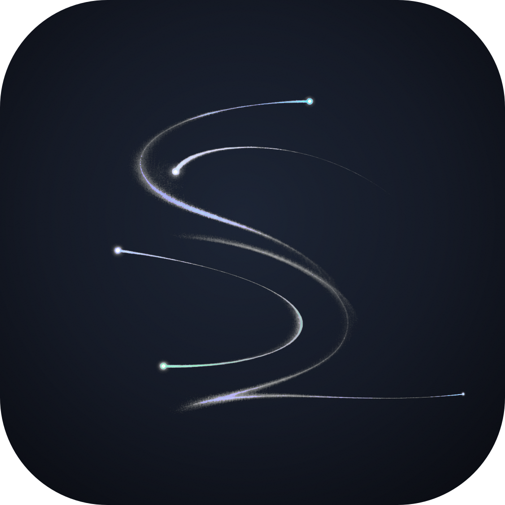
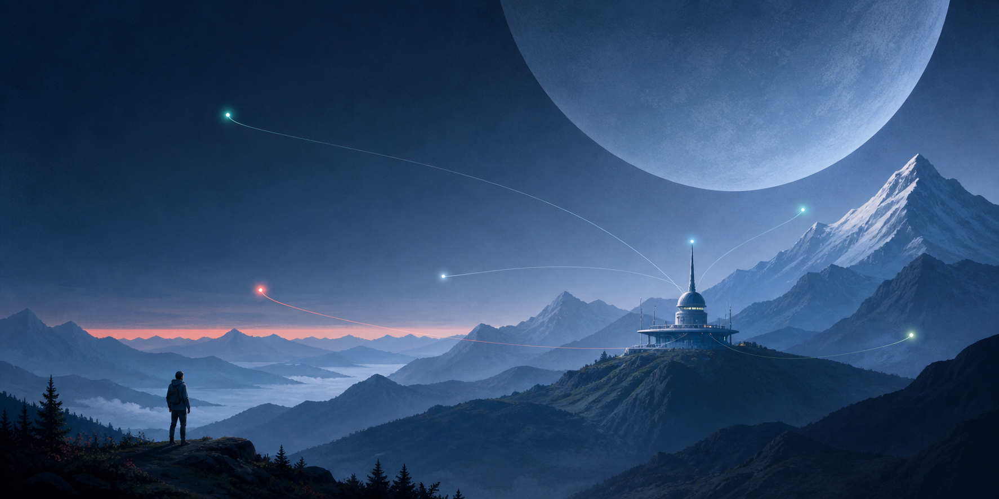
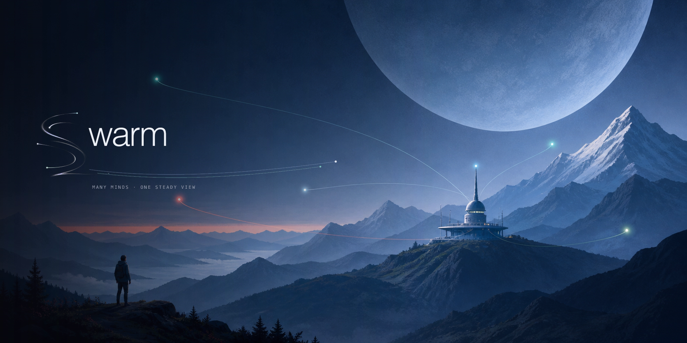
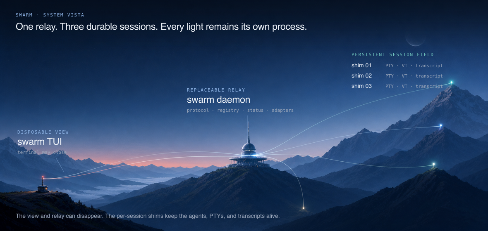
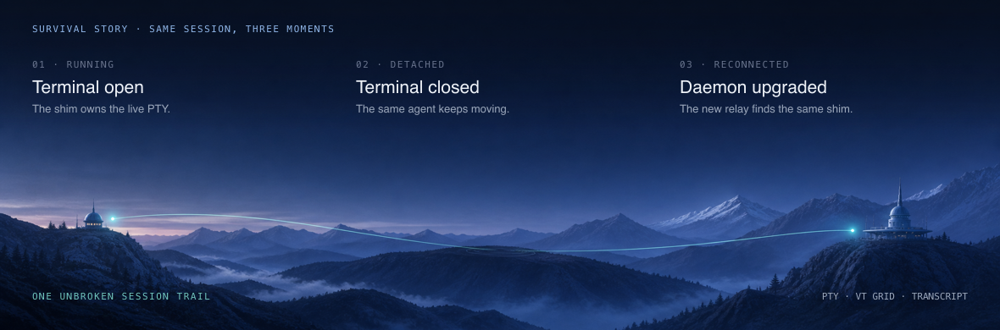
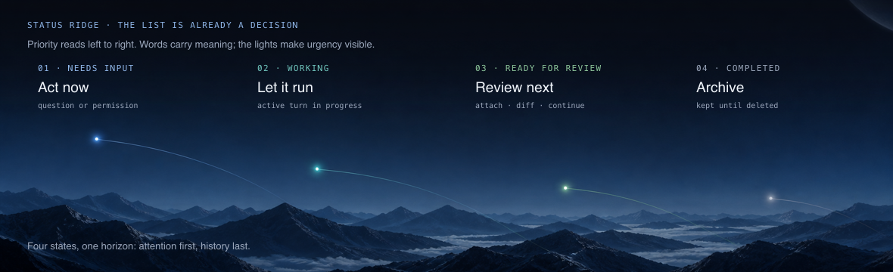

{kind=link}
Layered silhouettes
Mountain bands turn a complex system into simple, readable levels—even at README scale.

warmAn illustration system for swarm: the scale and wonder of a science-fiction cover, the legibility of a layered landscape poster, and the exact cool Slate colors already living in the mobile app.

“Swarm” can become noisy, insect-like, or diagrammatic very quickly. This direction makes it spacious instead: autonomous lights cross a living landscape while a quiet piece of infrastructure keeps the system coherent.
Mountain bands turn a complex system into simple, readable levels—even at README scale.
The planet gives the project ambition and wonder without adding interface chrome.
Agents remain separate actors. Their lines converge, but they do not collapse into a network diagram.
The person has oversight, not busywork: watching the whole field from one stable place.
The mobile palette is not pasted on top. Its surface ladder becomes atmospheric depth; its status colors become the agents’ tiny lights.
#0b0e14#131824#1b2334#8eb4e6#6fc3bc#8cc49a#e5736bThe same atmospheric swarm now anchors every scale. In the logo and app icon alike, the identity is only the motion itself: painted trajectories, negative space, and tiny autonomous lights. Nothing competes with that gesture.
Implementation: use a quiet near-black Slate field as the adaptive-icon background and the original generated emblem as the only foreground. Preserve the full painterly master for stores and desktop. Derive launcher sizes from this composition so the bright bot heads—not a thickened outline—carry recognition.
The emblem is generated from the hero artwork’s material language; the word “warm” and micro-copy remain deterministic. This keeps the poetry in the motion while preserving correct typography.
Image 1 is a mood, material, and palette reference only. Create a refined, delicate abstract swarm emblem: five extremely slender autonomous light trails sweep through negative space and collectively imply a graceful lowercase S without drawing a literal typographic glyph. Each trail tapers naturally like a distant moving beacon in atmosphere; tiny luminous bot points sit at different leading edges, and one finest trail continues right, translating the old cursor into motion. Smooth digital gouache and atmospheric airbrush, softly painted edges, subtle mist, restrained matte grain, quiet rather than techy. Only #8eb4e6, #eef2f8, #9aa6ba, and #6fc3bc. No text, solid glyph, thick stroke, outline, hard vector geometry, neon, insects, honeycomb, or watermark.
The native 2:1 frame fits a GitHub README hero. The relay-and-planet side survives a square crop for social or release artwork while the full scene keeps the human story.
The README now moves through one continuous atmosphere. Each technical asset starts as a purpose-generated editorial painting—moonlight, ridge depth, mist, hairline trajectories, and tiny bot beacons—then receives deterministic typography so the system language stays perfectly crisp.

The emotional promise comes first. It establishes the world and the brand before the README becomes technical; the title remains readable at GitHub’s content width.

A purpose-generated flight field answers “what owns what?”: the disposable TUI reaches a relay observatory, then each persistent shim continues as its own light. Exact labels are composited after generation for immaculate typography.

One luminous trail crosses all three moments: terminal open, terminal gone, daemon replaced. The persistent shim stays lit, making continuity both the technical point and the visual motif.

Four directly labeled beacons cross one ridge in priority order. The mobile Slate status colors become light in the landscape while the words still carry the exact state.
<p align="center"> <img src="docs/design/swarm-illustration-direction/readme-night-orchestra-lockup.png" alt="swarm — every agent, in one steady view" width="960"> </p> ## How it works <p align="center"><img src="docs/design/swarm-illustration-direction/readme-architecture-vista.png" alt="How swarm works" width="960"></p> <p align="center"><img src="docs/design/swarm-illustration-direction/readme-persistence-strip.png" alt="Why swarm sessions survive" width="960"></p> ## Status groups <p align="center"><img src="docs/design/swarm-illustration-direction/readme-state-ridge.png" alt="How swarm sorts sessions" width="960"></p>
SYSTEM VISTA — Image 1 is a style and palette reference only. Create an ultra-clean wide editorial blue-hour landscape: one disposable terminal at left, one refined relay observatory at center, three persistent session beacons at separate depths on the right, and hairline trajectories fanning through the relay. Premium smooth digital gouache / atmospheric screenprint, precise silhouettes, controlled grain, generous negative space. No text, UI boxes, arrows, people, logos, or watermark. SESSION SURVIVAL — Image 1 is a style and palette reference only. Create an ultra-wide three-beat blue-hour panorama crossed by one unbroken luminous session trajectory: terminal and teal shim together at left; terminal vanished but the same shim continuing at center; new relay reconnecting to that same shim at right. No literal panels, labels, boxes, people, logos, or watermark. STATUS RIDGE — Image 1 is a style and palette reference only. Create an ultra-wide blue-hour ridge with exactly four autonomous bot beacons in priority order: attention blue, working teal, ready green, muted slate. Give each one hairline trajectory and descending urgency, with dark negative space above for deterministic labels. No extra lights, text, boxes, buildings, people, logos, or watermark.
The identity works when the system feels capable, legible, and quietly alive. More objects and more glow would reduce that confidence.
The official references point to two useful ideas: a science-fiction book cover brought to life, and key art built to scale cleanly across wallpaper formats. This proposal translates those ideas into swarm’s own metaphor and palette.
Original retro-futurist editorial landscape illustration for a wide GitHub hero. A quiet alien alpine valley at blue hour under an enormous pale slate planet. Layered ridgelines descend into a cool near-black valley. A small elegant relay observatory sits center-right; five tiny luminous agent-beacons move independently across separate ridges and sky paths, their fine arcs subtly converging toward the relay. A tiny human operator watches from a low-left overlook. Premium smooth digital gouache / screenprint hybrid, strong silhouettes, soft atmospheric gradients, subtle matte grain, no photorealism or hard outlines. Use only tints of #0b0e14, #131824, #1b2334, #262e3f, #8eb4e6, #6fc3bc, #8cc49a, #e5736b, and #eef2f8. Leave dark negative space at left for a separate wordmark. No text, logos, UI, bees, honeycomb, weapons, cyberpunk density, or watermark.
{kind=link}
{kind=link}
{kind=link}
{kind=link}
{kind=link}
{kind=link}
{kind=link}